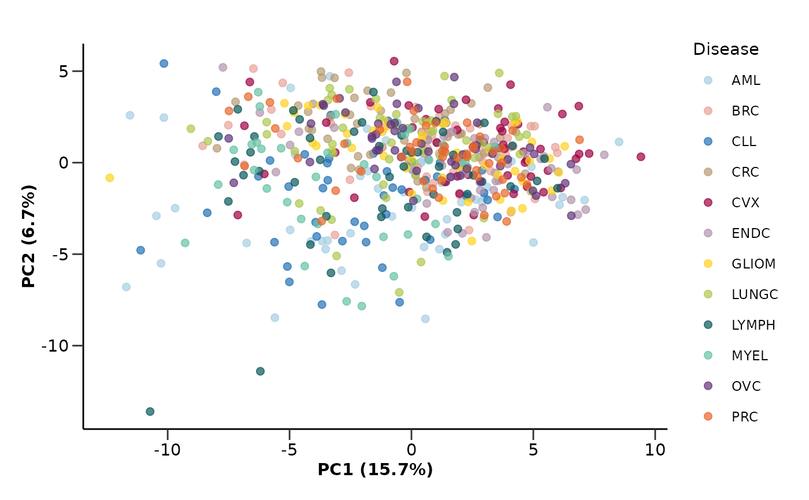
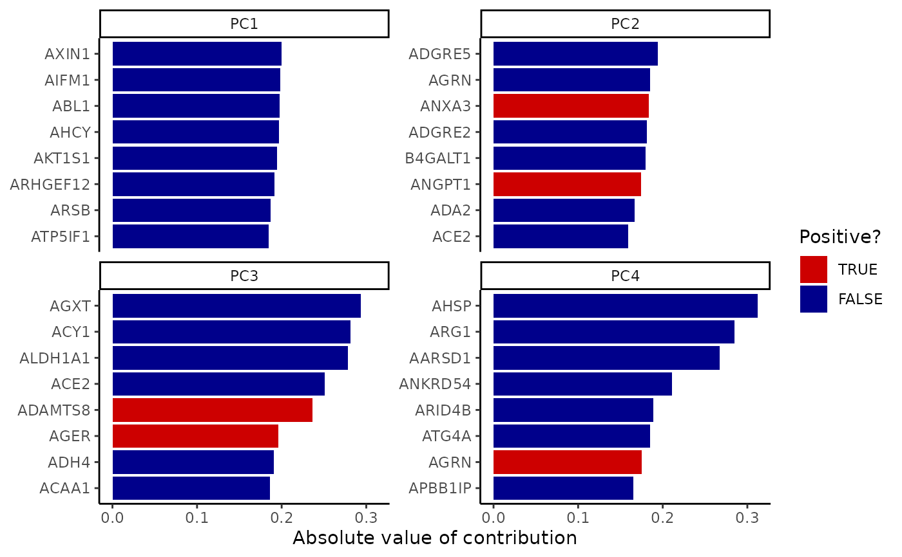
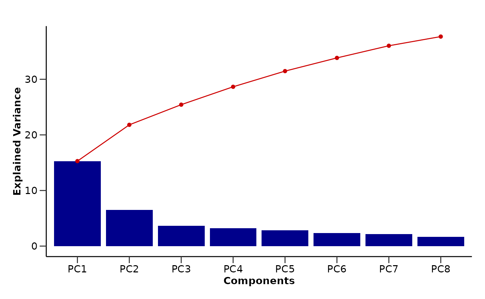

do_pca() runs a PCA analysis on the provided data. The function can visualize
the sample points on the first and second PC plane as well as the PCA loadings
and the explained variance. It can also save the plots in the results directory.
Usage
do_pca(
olink_data,
metadata = NULL,
pcs = 5,
color = "Disease",
palette = NULL,
wide = TRUE,
assay = FALSE,
impute = TRUE,
plots = TRUE,
x = "PC1",
y = "PC2",
npcs = 4,
nproteins = 8,
loadings = FALSE,
save = FALSE
)Arguments
- olink_data
A tibble with the data to be used in the PCA analysis.
- metadata
A tibble with metadata information to be used in the PCA plots. Default is NULL.
- pcs
The number of PCs to be calculated. Default is 5.
- color
The name of the column in
metadatathat contains the variable. to be used to plot the points color. Default is "Disease".- palette
The color palette for the plot. If it is a character, it should be one of the palettes from
get_hpa_palettes().- wide
If TRUE, the data is assumed to be in wide format. Default is TRUE.
- assay
If TRUE, each point is an assay and not a sample. Default is FALSE.
- impute
If TRUE, the data is imputed before the PCA analysis. Default is TRUE.
- plots
If TRUE, the function creates plots of the PCA results. Default is TRUE.
- x
The component to be plotted on the x-axis. Default is "PC1".
- y
The component to be plotted on the y-axis. Default is "PC2".
- npcs
The number of PCs to be plotted. Default is 4.
- nproteins
The number of proteins to be plotted. Default is 8.
- loadings
If TRUE, the PCA loadings are plotted on the 2 dimensional plot. Default is FALSE.
- save
If TRUE, the plots are saved in the results directory. Default is FALSE.
Value
A list with the PCA results and, if requested, the PCA plots.
pca_res: A tibble with the PCA results.
loadings: A tibble with the PCA loadings.
pca_plot: A ggplot object with the data points on the 1st and 2nd PCs plane.
loadings_plot: A PCA loadings ggplot object.
variance_plot: A ggplot object with the explained variance and cumulative explained variance.
Details
If you use more than 9 principal components (pcs > 9), the x and y
arguments should be formatted as 'PC01' instead of 'PC1', and so on.
Examples
do_pca(example_data,
metadata = example_metadata,
pcs = 8,
wide = FALSE,
color = "Disease",
palette = "cancers12")
#> $pca_res
#> # A tibble: 586 × 9
#> DAid PC1 PC2 PC3 PC4 PC5 PC6 PC7 PC8
#> <fct> <dbl> <dbl> <dbl> <dbl> <dbl> <dbl> <dbl> <dbl>
#> 1 DA00001 -3.67 -4.28 -2.34 -3.10 -2.65 -2.73 -2.78 0.433
#> 2 DA00002 4.11 -2.64 2.04 -0.441 -4.43 -1.91 -0.897 1.54
#> 3 DA00003 -3.34 4.72 1.41 0.881 -0.561 0.308 -0.0612 -0.267
#> 4 DA00004 -4.78 0.443 1.41 0.107 -1.10 -0.262 0.350 3.33
#> 5 DA00005 -4.98 -3.67 0.711 -5.70 -0.807 -3.77 -0.969 1.83
#> 6 DA00006 0.395 0.0572 -1.90 -7.75 0.707 -2.70 -0.681 0.301
#> 7 DA00007 -10.5 -2.91 -0.382 -0.841 -1.61 1.96 -1.30 2.51
#> 8 DA00008 2.64 -2.01 2.75 -0.128 -0.852 0.408 -1.70 0.595
#> 9 DA00009 -1.79 -0.461 2.79 -2.61 -2.71 0.0732 -3.08 1.75
#> 10 DA00010 3.57 0.821 -0.00756 1.50 -2.66 -0.856 0.0190 1.17
#> # ℹ 576 more rows
#>
#> $loadings
#> # A tibble: 10,000 × 4
#> Assay Value PC id
#> <chr> <dbl> <chr> <chr>
#> 1 AARSD1 -0.133 PC1 pca_EoYnc
#> 2 ABL1 -0.198 PC1 pca_EoYnc
#> 3 ACAA1 -0.163 PC1 pca_EoYnc
#> 4 ACAN 0.0123 PC1 pca_EoYnc
#> 5 ACE2 -0.0583 PC1 pca_EoYnc
#> 6 ACOX1 -0.135 PC1 pca_EoYnc
#> 7 ACP5 -0.0626 PC1 pca_EoYnc
#> 8 ACP6 -0.0933 PC1 pca_EoYnc
#> 9 ACTA2 -0.0751 PC1 pca_EoYnc
#> 10 ACTN4 -0.0424 PC1 pca_EoYnc
#> # ℹ 9,990 more rows
#>
#> $pca_plot

#>
#> $loadings_plot

#>
#> $variance_plot

#>